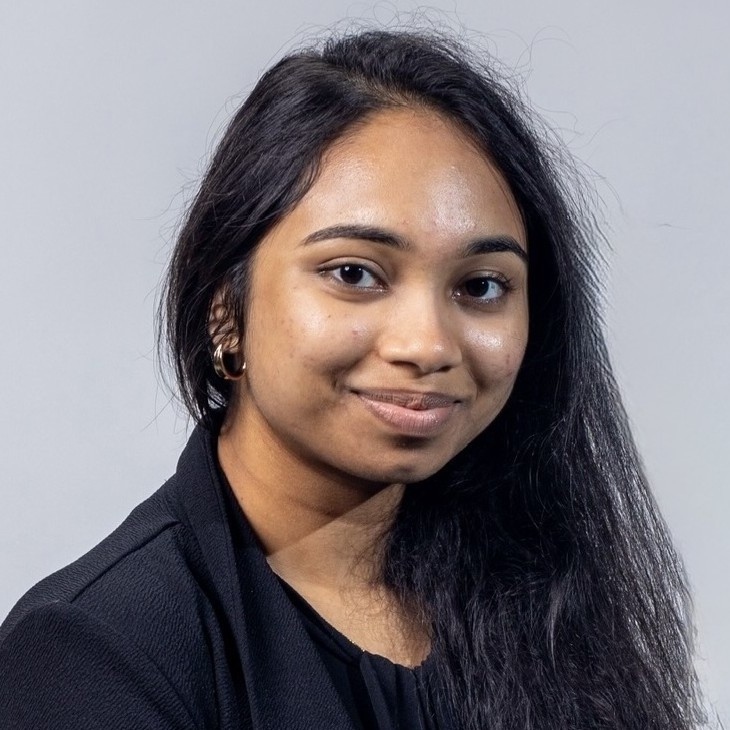
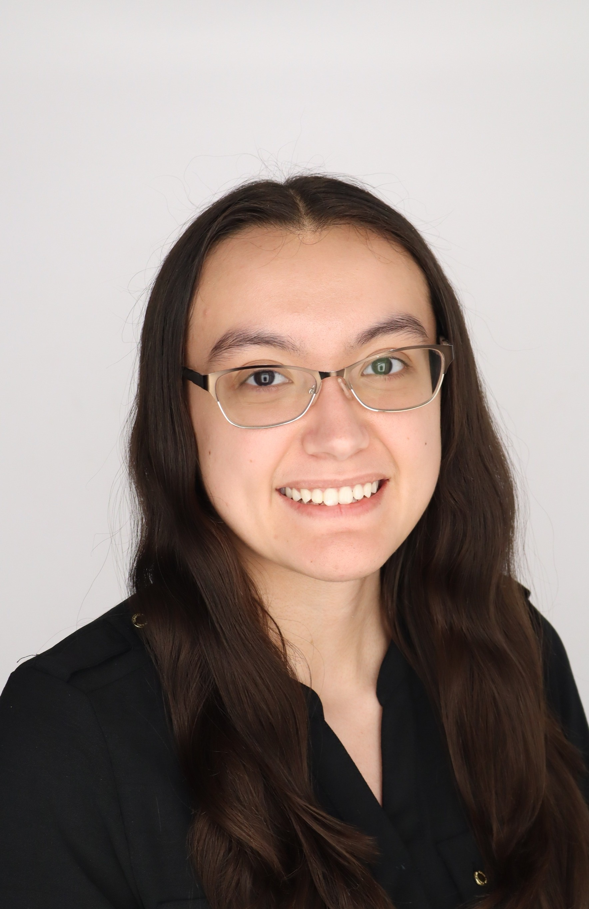
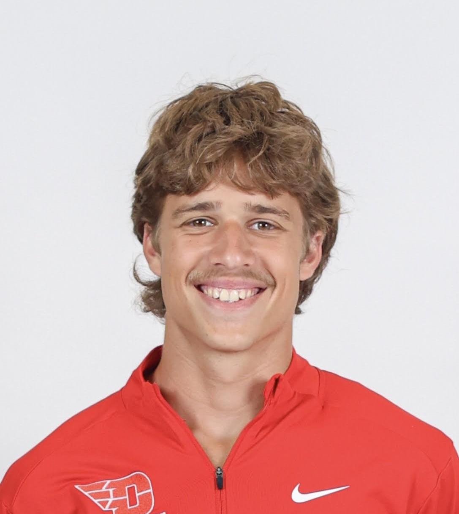
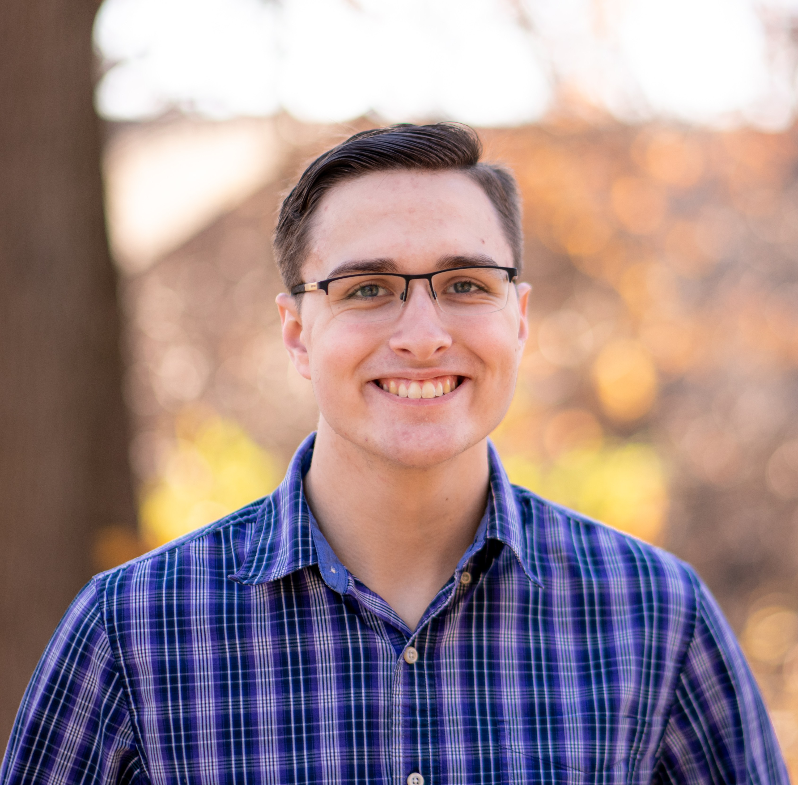
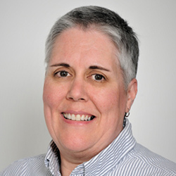

Meet the Team

Sahithi Kunisetty
Researcher/Software Engineer
I'm Sahithi, a Computer Science student at the University of Dayton with a minor in Business Administration.
I enjoy building full-stack applications and leveraging technologies like Java, Python, React, and Node.js to create practical, user-focused solutions. I've gained hands-on experience through a variety of projects, including a real-time online auction platform, interactive game development, and machine learning-based image compression. Additionally, during my software engineering co-op at GE Appliances, I worked on embedded systems and collaborated within Agile teams to deliver impactful solutions.
I'm passionate about writing clean, efficient code and continuously expanding my technical skill set by learning new technologies.

Brittney Popp
Researcher/Software Engineer
I'm a Computer Science student at the University of Dayton with a minor in Anthropology. I have experience with Python, Java, MySQL, YAML, and Bash, with interests in database design and application development.
I've worked on several projects, including a multi-court tennis and pickleball scheduling database where I designed and implemented a normalized MySQL schema, as well as an Android amusement park quiz app built with Java and Room featuring score tracking and a user-focused interface.
Currently, I'm a Software Engineering Co-Op at Awetomaton Ltd, working with Kubernetes and Argo, and I plan to continue there full time after graduation. Previously, I completed an MIS Co-Op at Neaton Auto Products developing inventory tools and training with the programming team on Azure DevOps.

Owen Pukys
Researcher/Software Engineer
I am a Computer Science student at the University of Dayton with a background in software development and experience in Java, Python, and MySQL. I have a strong interest in building efficient, data-driven systems and applying technical concepts to real-world problems.
My experience spans full-stack development, including building web applications using Neo4j/MongoDB, Express, React, and Node.js. Additionally, as a Software Developer at Tata Consultancy Services (TCS), I developed Python-based utilities to optimize and automate client Excel workflows, improving efficiency and streamlining data processing tasks.
Looking ahead, I will be attending Duke University to pursue a Master of Management Studies and Master of Business Administration (MMS/MBA) while continuing to compete as a cross country and track & field athlete. I aim to combine my technical background with business strategy in a consulting or technology-focused role.

Thomas Woodrich
Researcher/Software Engineer
I am a Computer Science student at the University of Dayton with experience in Python and Java. I plan to further my education at Sinclair Community College, where I will study Digital Forensics.
I am glad I got to contribute to this project, which aims to preserve and showcase the history of the CPS department. Previously, I developed and managed a database for Converting Systems, where I was also responsible for overseeing much of the company’s technology infrastructure.
Contact & Acknowledgments

Dr. Nicholas (Nick) Stiffler
Instructor
nstiffler1@udayton.edu

Denise Brown
Sponsor
dbrown2@udayton.edu